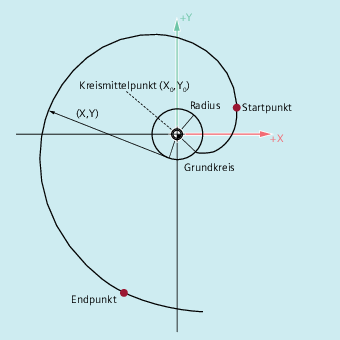
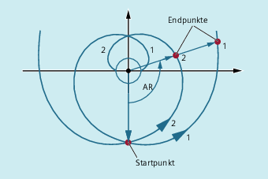
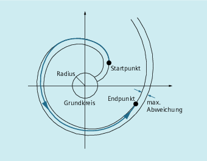
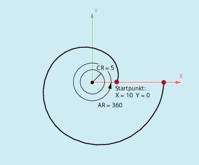

Die Evolvente des Kreises ist eine Kurve, die vom Endpunkt eines fest gespannten, von einem Kreis abgewickelten Fadens beschrieben wird.
Die Evolventen-Interpolation ermöglicht Bahnkurven entlang einer Evolvente. Sie wird in der Ebene ausgeführt, in welcher der Grundkreis definiert ist und verläuft vom programmierten Startpunkt zum programmierten Endpunkt.
Die Programmierung des Endpunkts kann auf zwei Arten erfolgen:
Direkt über kartesische Koordinaten
Indirekt durch Angabe eines Öffnungswinkels (vgl. hierzu auch die Programmierung des Öffnungswinkels bei der Kreisprogrammierung)
Liegen Start und Endpunkt nicht in der Ebene des Grundkreises, ergibt sich analog zur Schraubenlinien-Interpolation bei Kreisen eine Überlagerung zu einer Kurve im Raum.
Bei zusätzlicher Vorgabe von Bahnwegen senkrecht zur aktiven Ebene kann (vergleichbar zur Schraubenlinien-Interpolation bei Kreisen) eine Evolvente im Raum verfahren werden.
Syntax
INVCW X... Y... Z... I... J... K... CR=...INVCCW X... Y... Z... I... J... K... CR=...INVCW I... J... K... CR=... AR=...INVCCW I... J... K... CR=... AR=...Bedeutung
| Befehl zum Fahren auf einer Evolvente im Uhrzeigersinn | |
| Befehl zum Fahren auf einer Evolvente gegen den Uhrzeigersinn | |
| Direkte Programmierung des Endpunkts in kartesischen Koordinaten | |
| Interpolationsparameter zur Beschreibung des Mittelpunkts des Grundkreises in kartesischen Koordinaten Hinweis: | |
| Radius des Grundkreises | |
| Indirekte Programmierung des Endpunkts durch Angabe eines Öffnungswinkels (Drehwinkels) Der Ursprung des Öffnungswinkels ist die Gerade vom Kreismittelpunkt zum Startpunkt. | |
| Die Bahn auf der Evolventen bewegt sich vom Grundkreis weg. | |
| Die Bahn auf der Evolventen bewegt sich zum Grundkreis hin. Für AR < 0 ist der maximale Drehwinkel dadurch beschränkt, dass der Endpunkt immer außerhalb des Grundkreises liegen muss. | |
Indirekte Programmierung des Endpunkts durch Angabe eines Öffnungswinkels
| Achtung |
Öffnungswinkel undefiniertBei der indirekten Programmierung des Endpunkts durch Angabe des Öffnungswinkels AR ist das Vorzeichen des Winkels zu beachten, da ein Vorzeichenwechsel eine andere Evolvente und damit eine andere Bahn zur Folge hätte. |
Dies soll anhand des folgenden Beispiels verdeutlicht werden:
Für Evolvente 1 und 2 stimmen die Angaben von Radius und Mittelpunkt des Grundkreises, sowie des Startpunkts und des Drehsinns (INVCW / INVCCW) überein. Der einzige Unterschied besteht im Vorzeichen des Öffnungswinkels:
Mit AR > 0 bewegt sich die Bahn auf der Evolvente 1 und es wird Endpunkt 1 angefahren.
Mit AR < 0 bewegt sich die Bahn auf der Evolvente 2 und es wird Endpunkt 2 angefahren.
Randbedingungen
Sowohl der Startpunkt als auch der Endpunkt müssen außerhalb der Fläche des Grundkreises der Evolvente (Kreis mit Radius CR um den durch I, J, K festgelegten Mittelpunkt) liegen. Trifft diese Bedingung nicht zu, wird ein Alarm generiert und die Programmverarbeitung abgebrochen.
Die beiden Möglichkeiten zur Programmierung des Endpunkts (direkt über kartesische Koordinaten oder indirekt über die Angabe eines Öffnungswinkels) schließen sich gegenseitig aus. In einem Satz darf daher nur eine der beiden Programmiermöglichkeiten verwendet werden.
Falls der programmierte Endpunkt nicht exakt auf der durch den Startpunkt und Grundkreis festgelegten Evolventen liegt, wird zwischen den beiden Evolventen, die durch den Startpunkt bzw. den Endpunkt definiert sind, interpoliert (siehe folgende Abbildung).
Die maximale Abweichung des Endpunkts wird durch ein Maschinendatum festgelegt (→ Maschinenhersteller!). Wenn die Abweichung des programmierten Endpunkts in radialer Richtung größer ist als der durch dieses MD festgelegte Wert, dann wird ein Alarm generiert und die Programmverarbeitung abgebrochen.
Beispiele
Beispiel 1: Linksdrehende Evolvente vom Startpunkt zum programmierten Endpunkt und als rechtsdrehende Evolvente wieder zurück

| Programmcode | Kommentar |
|---|---|
| N10 G1 X10 Y0 F5000 | ; Anfahren der Startposition. |
| N15 G17 | ; Anwahl der X/Y-Ebene als Arbeitsebene. |
| N20 INVCCW X32.77 Y32.77 CR=5 I-10 J0 | ; Evolvente gegen den Uhrzeigersinn, Endpunkt in kartesischen Koordinaten. |
| N30 INVCW X10 Y0 CR=5 I-32.77 J-32.77 | ; Evolvente im Uhrzeigersinn, Startpunkt ist Endpunkt aus N20, neuer Endpunkt ist Startpunkt aus N20, neuer Kreismittelpunkt bezieht sich auf neuen Startpunkt und ist gleich dem alten Kreismittelpunkt. |
| ... |
Beispiel 2: Linksdrehende Evolvente mit indirekter Programmierung des Endpunkts durch Angabe eines Öffnungswinkels
| Programmcode | Kommentar |
|---|---|
| N10 G1 X10 Y0 F5000 | ; Anfahren der Startposition. |
| N15 G17 | ; Anwahl der X/Y-Ebene als Arbeitsebene. |
| N20 INVCCW CR=5 I-10 J0 AR=360 | ; Evolvente gegen den Uhrzeigersinn und weg vom Grundkreis (da positive Winkelangabe) mit einer vollen Umdrehung (360 Grad). |
| ... |